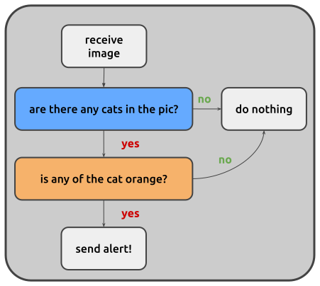

Write and package a node¶
This guide shows how to write a custom node and make it available to your
pipelines. As an example we build RedCatDetector, a processing node that
uses a YOLO model to detect red cats in the images it receives.
If you have never written a node, the tutorial is a gentler start.
Where nodes live¶
Juturna finds nodes in installed Python packages, under three namespaces:
juturna.nodes, for the officialjuturna-nodespackage;juturna.extensions, for extension packages;juturna.contrib.<package>.nodes, for everybody else. This is where your nodes go, with<package>being your name or the name of your organisation.
A node repository has this layout:
my-nodes/
├── pyproject.toml
└── src/juturna/contrib/<package>/
├── __init__.py
└── nodes/
├── __init__.py
└── _<node_name>/
├── <node_name>.py
├── config.toml
├── requirements.txt
└── README.md
juturna and juturna/contrib are namespaces shared by every node
package installed, so they must not have an __init__.py file.
Create the skeleton¶
From the root of the repository, let the stub command create the files:
(.venv) $ python -m juturna stub \
--node-name red_cat_detector \
--package catwatch \
--author "Cat Watcher" \
--email watch@cat.com
Node creation successful! Node type: contrib.catwatch.nodes.RedCatDetector
The command writes the node folder in
src/juturna/contrib/catwatch/nodes/_red_cat_detector/ and registers the
class in nodes/__init__.py:
_AVAILABLE_PLUGINS: dict[str, str] = {
'RedCatDetector': '._red_cat_detector.red_cat_detector',
}
The node type it prints is what goes in the type field of a pipeline
configuration.
If you create the files by hand:
the node folder name starts with an underscore (
_red_cat_detector);the module has the name of the folder, without the underscore (
red_cat_detector.py);the class must be added to
_AVAILABLE_PLUGINS, or Juturna will not find it.
Declare the arguments¶
The arguments a node accepts, with their default values, are declared in its
config.toml. Our detector needs to know which model to use, where to run
it, and two thresholds:
[arguments]
model = "yolo11x.pt"
device = "cuda"
cat_min_confidence = 0.4
orangeness_threshold = 0.6
[meta]
A pipeline configuration can override any of them. Keys that are not declared
here are dropped (juturna validate warns about them), so every argument
needs a default.
Add dependencies¶
The node uses YOLO and OpenCV. List them in the dependencies of your package (see Package the nodes), and install them in your environment:
(.venv) $ pip install ultralytics opencv-python
Juturna does not install the dependencies of a node for you: they come with the package the node is in.
Implement the node¶
The arguments of config.toml reach the node as arguments of __init__.
Everything else (the node name, the pipeline name) travels in kwargs and
goes to the base class.
import typing
import cv2
import numpy as np
from ultralytics import YOLO
from juturna.components import Message
from juturna.components import Node
from juturna.payloads import ImagePayload
class RedCatDetector(Node[ImagePayload, ImagePayload]):
def __init__(
self,
model: str,
device: str,
cat_min_confidence: float,
orangeness_threshold: float,
**kwargs,
):
super().__init__(**kwargs)
self.model_name = model
self.device = device
self.cat_min_confidence = cat_min_confidence
self.orangeness_threshold = orangeness_threshold
self.model = None
self._target_class = list()
The two type parameters of Node are the payload the node receives and the
one it transmits: here images in, annotated images out.
Loading the model takes time and memory, so it belongs in warmup(), which
the pipeline calls once before starting:
def warmup(self):
self.model = YOLO(self.model_name)
self.model.to(self.device)
# we only care about cats
self._target_class = [
k for k, v in self.model.names.items() if v == 'cat'
]
self.logger.info('model ready')
The work happens in update(), called once for every message received:
run the image through the model;
keep the cats that are orange enough;
transmit an annotated image when at least one is found.


def update(self, message: Message[ImagePayload], **kwargs):
image = message.payload.image
results = self.model.predict(
image,
verbose=False,
conf=self.cat_min_confidence,
classes=self._target_class,
)
orange_cats = list()
for idx, box in enumerate(results[0].boxes):
x1, y1, x2, y2 = map(int, box.xyxy[0])
if self._is_cat_orange(image[y1:y2, x1:x2]):
orange_cats.append(idx)
# no cat, or none of them orange enough: nothing to send
if not orange_cats:
return
results[0].boxes = results[0].boxes[orange_cats]
annotated = results[0].plot()
to_send = Message[ImagePayload](
creator=self.name,
version=message.version,
payload=ImagePayload(
image=annotated,
width=annotated.shape[1],
height=annotated.shape[0],
depth=annotated.shape[2],
pixel_format=message.payload.pixel_format,
timestamp=message.payload.timestamp,
),
timers_from=message,
)
to_send.meta['orange_cats'] = len(orange_cats)
self.transmit(to_send)
def _is_cat_orange(self, crop_rgb: np.ndarray) -> bool:
hsv = cv2.cvtColor(crop_rgb, cv2.COLOR_RGB2HSV)
mask = cv2.inRange(
hsv, np.array([5, 50, 50]), np.array([25, 255, 255])
)
return np.count_nonzero(mask) / mask.size > self.orangeness_threshold
A few rules worth remembering:
update()always takes**kwargs: the pipeline passes the node state inkwargs['state'](see Keep data between messages);a received message is frozen. To send it on with changes use
message.copy(), to send new data build a newMessage(see Messages and payloads);only
Messageobjects can be transmitted;an exception raised by
update()is logged and counted in the node health, and the node goes on with the next message.
The orangeness check is rough (it may fail if you, just like me, have an orange wall), but for now we’ll make do.
Keep data between messages¶
A node that needs to remember something from one message to the next uses its state, a dictionary the pipeline keeps for it:
def update(self, message: Message[ImagePayload], **kwargs):
state = kwargs['state']
state['seen'] = state.get('seen', 0) + 1
The same goes for a node with several inputs that needs a message from each before producing its output: it keeps the pending ones in the state. See Nodes for an example.
Write a source node¶
A source node produces messages instead of receiving them. In __init__
it registers a function with set_source():
def __init__(self, interval: float, **kwargs):
super().__init__(**kwargs)
self.set_source(self._read_frame, by=interval, mode='pre')
The function returns a Message, or None when it has nothing to
deliver. With mode='pre' the node waits by seconds before each call,
with mode='post' (the default) after it. With by=0 the function is
called again right away, so it should block until data is available.
The messages it returns arrive in update(), which normally just transmits
them.
Change a node while it runs¶
To let a property change while the pipeline is running, implement
set_on_config():
def set_on_config(self, prop: str, value: typing.Any):
if prop == 'cat_min_confidence':
self.cat_min_confidence = value
elif prop == 'orangeness_threshold':
self.orangeness_threshold = value
else:
self.logger.warning(f'cannot update property {prop}')
It is called through the pipeline:
pipeline.update_node('detector', 'cat_min_confidence', 0.7)
The call runs in the thread of the caller, possibly while update() is
working: if the two touch more than a simple value, protect it with a lock.
Package the nodes¶
A node repository is a normal Python package. A minimal pyproject.toml,
using hatchling:
[project]
name = "catwatch-nodes"
version = "0.1.0"
requires-python = ">=3.12"
dependencies = ["juturna>=3.0.0", "ultralytics", "opencv-python"]
[build-system]
requires = ["hatchling"]
build-backend = "hatchling.build"
[tool.hatch.build.targets.wheel]
only-include = ["src/juturna/contrib/catwatch"]
sources = ["src"]
Install it in the environment where your pipelines run:
(.venv) $ pip install .
While developing, export PYTHONPATH=src from the root of the repository
does the same job without installing anything.
Use the node¶
In a pipeline configuration, the node is:
{
"name": "detector",
"type": "contrib.catwatch.nodes.RedCatDetector",
"configuration": {
"model": "./models/yolo11x.pt",
"cat_min_confidence": 0.5
}
}
device and orangeness_threshold keep the defaults of config.toml.